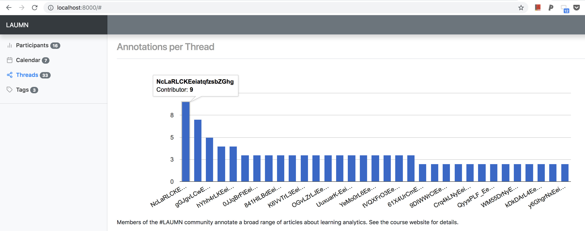
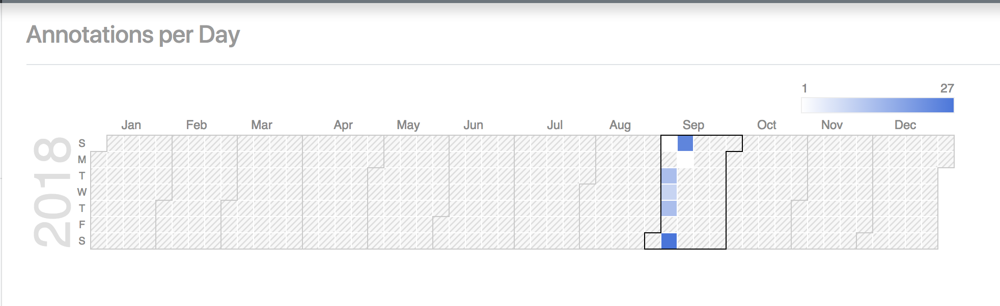

Thanks for the engaged conversations in the first week of #LAUMN!
We’ve been engaged in such thoughtful dialogues via Hypothes.is annotations. We’re trying to survive all those acronyms by maintaining a community glossary. Also a big shout-out to Crystal Rose-Wainstock for her #LAUMN tweet about ethics in learning analytics (below). The breadth of expertise represented in our community is truly energizing. I hope we can continue to have deep conversations within and beyond this community, and to engage in learning that’s personal to everyone of us.
Thinking about learning analytics and the ethics of big data use in education. #laumn #ci5371 pic.twitter.com/8wQgpH0OF5
— Crystal Rose-Wainstock (@crosewainstock) September 5, 2018
In the spirit of “living and exploring the capacity of learning analytics,” I want to introduce an analytics tool named CROWDLAAERS developed by my UC-Denver colleagues Remi Kalir and Francisco Perez for the Marginal Syllabus project. This application, which just came out during the summer, retrieves annotations from the server and generates interesting interactive visualizations.
For instance, below is an overview of our own #LAUMN annotation threads. I found it quite useful for discovering threads with more (or less) participation.

Another example is the calendar view that tells us when we tend to make annotations.

It appears we were quite busy making annotations during the weekend. I believe we can do better next week – working less during the weekend if possible ;-)

Week 2
This week we will:
- Develop a stronger grasp of the field of LA
- Start to explore Working Group project ideas
Video
After reading and discussing the George Siemens (2013) article during Week 1, it’s worthwhile to watch a lecture George gave to a MOOC (massive open online course) on learning analytics. George is the founding president of the Society for Learning Analytics Research (SoLAR), which is the most prominent international organization of learning analytics.
Readings
This week, we will get a chance to take a closer look at this field by exploring more cases/examples and posing more questions. What problems do learning analytics seek to address? In which educational settings? At which levels of an education system? Because this field is truly inter- and trans-disciplinary, I expect us to enter this field from our unique backgrounds and contribute to the field with different perspectives.
- Buckingham Shum, S. (2012). UNESCO Policy Brief: Learning Analytics. UNESCO Institute for Information Technologies in Education.
- Choose one from below (Note: #1 is open-access, and #2 is accessible to UMN colleagues):
- Bienkowski, M., Feng, M., & Means, B. (2012). Enhancing Teaching and Learning Through Educational Data Mining and Learning Analytics: An issue brief (pp. 1-35). U.S. Department of Education Office of Educational Technology.
- Krumm, A., Means, B., & Bienkowski, M. (2018). Learning Analytics Goes to School: A Collaborative Approach to Improving Education, Chapter 2. Routledge. (Note: This reading can only be annotated offline. Check this Youtube video to learn how.)
When reading each article, please create at least 1 annotation and reply to 2 annotations made by peers. Let the community know when you find a case that matches perfectly with your interests, stretches your imagination of learning anlaytics, or concerns you for whatever reasons.
Reminder: If you are a UMN participant, when annotating with Hypothes.is, please make sure the LAUMN group is selected.
Exploring Working Group project ideas
While/after reading, draft a project idea based on your interests and post it on Slack. This is an opportunity for us to learn more about our interests and form project teams. So please comment on each other’s posts if you’re also interested or have questions/suggestions.
For open participants, please tweet a blog post (or a shared Google doc) using the #LAUMN hashtag.

Below are a list of example project ideas. Please see the syllabus for more detailed guidelines.
- Applying Natural Language Processing to Investigating Language Development and Epistemic Complexity in Group Chats
- Integrating a Teacher Dashboard in K-12: A Mixed-Methods Study of Teacher Perspectives
- “Burn the World” Learning Analytics Design (Note: Burn the World is a game for environmental education.)
- “The Bridge”: An Analytics Tool to Integrate Community Knowledge on StackOverflow in RStudio
- Developing a Deep Learning Model for the Prediction of Student Success in Introductory Physics
Virtual Meeting
Our second virtual meeting will take place on Monday, 09/17, 5-6:30pm via Zoom. You will receive a Calendar invitation with details.
See you soon!